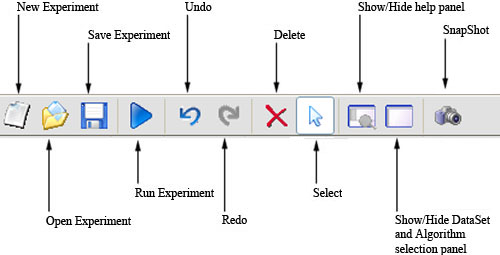

TOOL BARS
There are two tool bars in this program. One of them appears under the menu bar. Pressing on its buttons it is possible to access to the most frequently used options that appear in the menus. It looks like this:

The other one is located on the left of the main window, and it contains buttons to perform specific options of design. It look like this:
If you put the mouse over a button, it will appear a
short description about it.